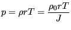
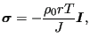
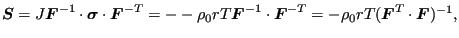
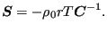
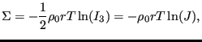
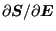
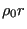

Next: Hyperelastic and hyperfoam materials Up: Materials Previous: Ideal gas for small Contents
An ideal gas can also be modeled as a hyperelastic material. Indeed, the ideal gas law
 |
(398) |
can also be written as
 |
(399) |
where
 is the Cauchy stress and
is the Cauchy stress and
 is the
identity tensor of second order. The Piola-Kirchhoff stress
is the
identity tensor of second order. The Piola-Kirchhoff stress
 amounts to:
amounts to:
 |
(400) |
or
 |
(401) |
Using Equation (4.156) from [24] it is not difficult to prove that this stress can be derived from the free energy function
 |
(402) |
where  is the third invariant of the Cauchy-Green tensor
is the third invariant of the Cauchy-Green tensor
 . To obtain the material stiffness
. To obtain the material stiffness
In CalculiX this law can be used in any mechanical calculation provided the temperature is
known. It is coded as a user material in routine
umat_ideal_gas.f. In order to use this material, the constant 